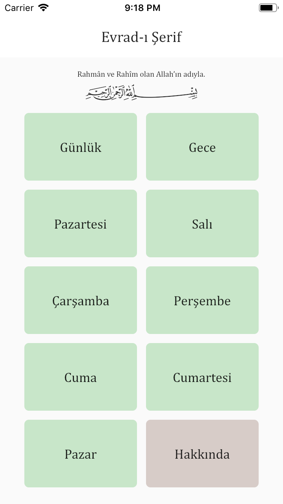
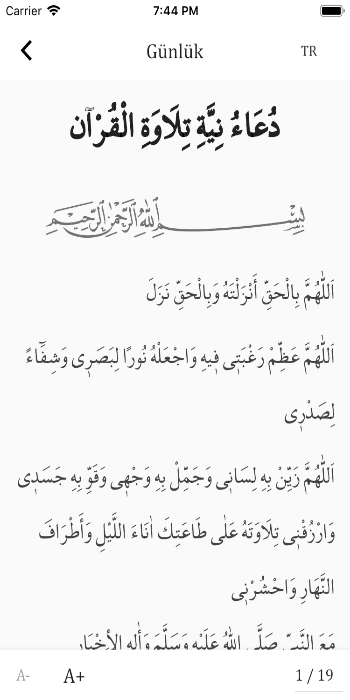
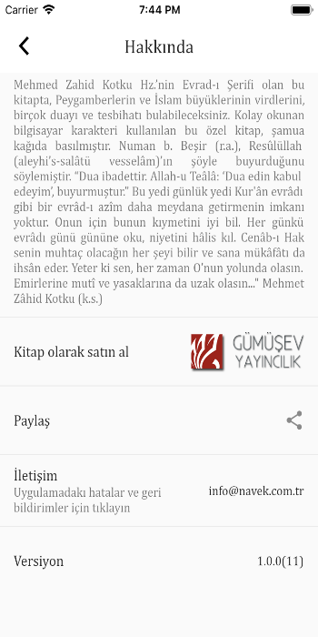
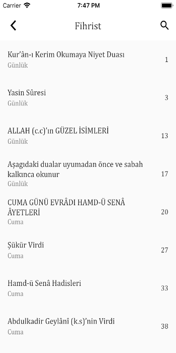

Evrad-ı Şerif
-
Mehmed Zahid Kotku Hz.’nin Evrad-ı Şerifi olan, Gümüş Ev Yayıncılık'ın bastığı kitaptan alınan içerikle hazırlanan bu uygulamada, Peygamberlerin ve İslam büyüklerinin virdlerini, birçok duayı ve tesbihatı bulabileceksiniz. Numan b. Beşir (r.a.), Resûlüllah (aleyhi’s-salâtü vesselâm)’ın şöyle buyurduğunu söylemiştir. “Dua ibadettir. Allah-u Teâlâ: ‘Dua edin kabul edeyim’, buyurmuştur.”


Evrad-ı ŞerifContact Us